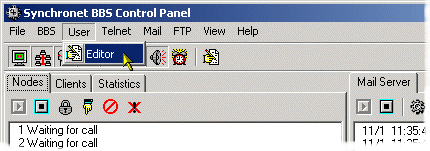
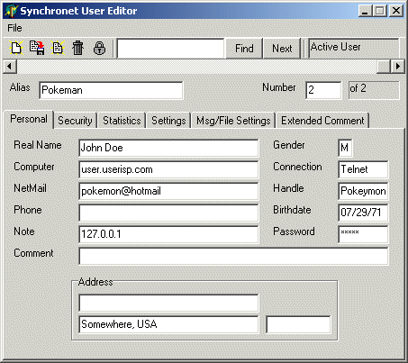

Graphical Synchronet User Editor (v3+ Only)
The User Editor application can be executed from the menu bar of the Synchronet Control Panel as shown below. 
Below is a screenshot of the GUI User Editor with a sample user and data shown. How this screen looks will vary depending upon your configuration and what data you decide to collect from new users. There are many options and settings available in the User Editor and you should spend some time getting familiar with this feature.

Online Synchronet User Editor
Alt-U (v2 Only)
The sysop can locally hit Alt-U at any time within Synchronet to bring
up the User Edit function with the user that is online as the current
user to edit. After exiting User Edit, the sysop will return to the
place where he was prior to hitting Alt-U.
U
At the Reading Mail or Reading All Mail prompts, hitting 'U' will pop
the sysop into User Edit with the author of the previous message as the
current user. Hitting 'U' at the Waiting for call screen will start
User Edit. Hitting 'U' from the Reading Messages (O)perator menu will
start User Edit too.
;UEDIT
Typing ';UEDIT' at either the Main or Transfer prompts will also pop
the sysop into User Edit and if a user number or name is specified
(e.g. ;UEDIT 20 or ;UEDIT BOB), then that user will be the current
user.
When a remote sysop initiates User Edit (with the U or ;UEDIT command), User Edit functions a little differently than when a local sysop initiates it. A remote sysop cannot raise any user's Level above his own and can't give a user any Flags or Exemptions that he/she doesn't have. A remote sysop can not edit any information of any users with a Level higher than his own and their passwords, real names, and phone numbers aren't displayed to him/her. User Edit Screen Example: Alias : The Albatross Password : MYPASS 10/12/91 Real Name : Joe Schmoe Phone number : 714-555-1212 Address : 404 N.S. West Ln. Age/Sex/BD : 31 M 03/08/61 Location : Irvine, Ca Zip Code : 90001 Note : Handle : J Schmoe Computer : 386DX-25 ISA SVGA 4 60 ST506 Modem type : 14.4/V32 First on : 07/19/91 Expire : 12/18/95 Last on : 09/12/92 20:13 Time on : 2831 Today : 0 105 Last call : 9 90 Extra : 0 Logons : 156 Today : 0 6 Posts : 39 24 Today : 0 E-mails : 22 To sysop : 3 Waiting : 0 Today : 0 Uploads : 3,085 bytes in 1 files Downloads : 90,389,401 bytes in 282 files Credits : 4,007,324 free: 0 (0 per day) Minutes : 0 Sec Level : Flags #1 : CD L N Flags #3 : AB E Flags #2 : G Flags #4 : F H Exemption : Restricts : User Edit Screen Explanation
The 1st line contains either the alias (if aliases are allowed) or the name of the user, the user's password, and the date the password was last modified. The 2nd line contains the user's real name and the user's phone number. The 3rd line contains address of the user, the user's age, sex, and birthday in the form MM/DD/YY or DD/MM/YY if European Date format is enabled. The 4th line contains the user's location (normally City, State) and Zip (or postal) code. The 5th line contains a public note about the user and the user's chat handle. The 6th line contains the user's computer description and modem type. The 7th line contains the user's private comment - only readable or editable by a sysop. If there is a '$' after the "Comment" label, then this user has a message file currently attached and is view/editable with the '$' command. If the comment is blank and there isn't an extended comment, this line is blank. The 8th line contains the date the user was first on, the user's expiration date, and the date and time the user was last on. Dates are in the form MM/DD/YY or DD/MM/YY if European date format is enabled. The 9th line contains the total time (in minutes) the user has been online, how much time today, the maximum time he is allowed per day, amount of time on his most recent call, the maximum time he is allowed per call, and any extra time the user may have accumulated through file uploads. The 10th line contains the total number of logons for this user, the number of logons today, the maximum number of logons this user is allowed per day, total number of messages posted by this user, the user's current post/call ratio, and total posts today. The 11th line contains the total number of e-mails sent by this user, total number of e-mails sent to user #1, number of e-mails currently in user's mailbox, and the number of e-mails this user has sent today. The 12th line contains the user's NetMail forwarding address. If the user doesn't have a NetMail forwarding address specified, this line is blank. The 13th line contains the total number of bytes uploaded by this user and the total number of files. The 14th line contains the total number of bytes downloaded by this user and the total number of files. If the user has had any suspected leech downloads, the number of leech downloads is displayed here too. The 15th line contains the number of credits this user currently has. The free credits are given on a daily basis as determined by the sysop. The 16th line contains the amount of time credits this user has (in minutes). The 18th line contains the user's Security Level. The 19th line contains the user's Flag Sets 1 and 2 (if any). The 20th line contains the user's Flag Sets 3 and 4 (if any). The 21st line contains the user's Exemption and Restriction Flags that are set (if any). The 23rd line contains the User Edit command prompt which contains the number of the current user and the total number of user slots on the system. If the current user is deleted or inactive, then the 1st line will contain a string that specifies this status and all other lines will be shifted down one.
As with most Synchronet command prompts, hitting '?' will display a menu of commands.
A Alias and Chat Handle S Sex (Gender)
B Birthday T Set Text Search String
C Computer U Upload/Download Stats
D Delete/Deactivate/Restore V Validate User
E Exemptions W Password
F Flags X View Extended Comment
G Go to a User Y Copy User to Another Slot
H Edit/Create Extended Comment Z Restrictions
I Inspect/Edit User's Defaults ] Go Up One User
J Edit Minutes [ Go Down One User
K Edit Dates } Search Up
L Location and Address { Search Down
M Security Level / Set ARS Search String
N Note ~ Set Leech Download Counter
O Comment + Adjust Credits
P Phone Number * Adjust Minutes
Q Quit to Main Menu $ Edit Credits
R Real Name # View User Questionnaire
The available commands are listed below with explanations.
A - Alias and Chat Handle:
This command will let you edit the user's alias - a 25 character field
that must start with a non numeric character. You can also edit the
user's chat handle (an 8 character field) with this command.
B - Birthday
You can edit the user's birthday with this command. The form of the
date is forced as either MM/DD/YY or DD/MM/YY (depending on the
setting of the European date option).
C - Computer Description:
You can edit the user's 30 character computer description field with
this command.
D - Delete/Deactivate/Restore/Activate:
If the current user is at normal status (not deleted or inactive),
hitting this command will prompt you if you wish to delete or
inactivate this user. If you delete a user, his account will be saved
for number of days since his last logon. This number of days is
specified by the sysop in the SCFG. After this number of days,
a new user may obtain this slot. Inactive slots are the same as deleted
ones, except that they are reserved and can't be used by new users.
If the current user is deleted or inactive (as specified by the 1st
line of the screen), this command will allow you to restore the user
to normal status.
E - Exemption Flags:
Exemptions are used by the sysop to give user's extended privilege
to the system. For example, you might want to give a trustworthy
user the right to remove, move, and edit descriptions of all files
in the Transfer Section. Normally users can only remove or edit the
description of a file they've uploaded, but a user with the 'R'
exemption can move any file, remove any file, or edit any file
description in the Transfer Section. This ability is normally only
given to sysops.
Using this command you can toggle the state of an Exemption Flag
by hitting the corresponding letter. To view a menu of the available
exemptions, hit '?' or [ENTER] to stop editing the Exemption Flags.
The following is a list of the available exemptions and their
descriptions ($ indicates that sysops have this capability):
A - Anonymous
Allows user to post and send e-mail anonymously.
C - Chat $
Allows user to page the local sysop with the ;CHAT command
regardless of the sysop availability state (Scroll-Lock).
D - Download
Allows user to download files even when the user doesn't
have enough credits.
E - Expire by Time
Prevents user account from expiring when the user runs out of
time and the SCFG->System->Toggle Options->User Expires When
Out of Time is set to YES.
F - FidoNet Crash/File Request/Return Receipt NetMail
Allows user to send NetMail using title specifiers:
"CR:" to over-ride default crash status to ON
"FR:" to send file requests (FREQ)
"FA:" to send file attachments
"RR:" to request a return receipt
See Sending FidoNet NetMail for more information.
G - Multiple Nodes $
Allows user to be logged on to more than one node at a time.
This exemption is useful for Guest accounts.
H - No inactivity
Allows user to be logged for extended inactive periods
without being automatically disconnected.
I - Interrupt Nodes $
Allows user to interrupt (hang up on) other nodes with the
;INTR command.
J - Chat Channel Cost
User will not be charged credits to change chat channels.
L - Logons per day
Allows user to logon the system an indefinite number of times
per day.
M - Modem Rate $
Allows user to logon any node at any modem speed regardless
of what the minimum modem speed for that node is.
N - Node Locking $
Allows user to toggle the lock status of any node with the
;LOCK command and log on a locked node.
P - Permanent
This user account will not be automatically deleted because
of inactivity.
Q - Quiet/Anonymous Node $
Allows user to toggle the quiet or anonymous state of his node
with the ;QUIET or ;ANON commands respectively. Nodes that are
in quiet mode appear to be "Waiting for call" to the other
nodes. Anonymous modes appear to have "UNKNOWN USER" online.
R - Remove/Move/Edit Descriptions of Files $
Allows user to remove, move, or edit the descriptions of any
file in the Transfer Section that the user has access to.
S - Send NetMail Cost
User will not be charge credits for sending NetMail.
T - Time Online
Allows the user to remain online indefinitely - no time limit.
The inactivity timer remains active.
X - External Programs
User will not be charged credits to run external.
F - Flags:
This command lets you toggle the state of all Flags. Hitting a number
will allow you to edit that particular flag set. Hitting '?' will
display a menu that is used to remind the sysop of the meaning of each
Flag. These menus are located in the TEXT\MENU directory and names are
FLAGS1.ASC, FLAGS2.ASC, FLAGS3.ASC, and FLAGS4.ASC. Hitting [ENTER]
will end the editing of the flags.
The Flags in conjunction with the Level can by used by the sysop to
limit access to Message Groups, Sub-boards, External Programs,
General Text File Sections, Transfer Libraries, and Directories.
G - Go to a User:
This command will let you change the current user into another user
by entering the user's name, partial name, or number. It should be
noted that the fastest way to change the current user is to type the
number of the user directly at the User Edit prompt.
H - Edit/Create Extended Comment:
This command will let the sysop edit or view an existing extended
comment or create a new one. An extended comment is a free-form message
file that a sysop creates that contains information pertaining to this
user. A '+' after the "Comment:" string on the 5th line of the User
Edit screen specifies that an extended comment already exists.
I - Inspect or Edit User's Default Settings:
This command will bring up the current user's default settings for
ANSI terminal emulation, screen length, screen pausing, spinning
cursor, auto new file scan, clear screen after messages, auto menu
display, and default QUIET mode (if the user has the 'Q' exemption).
J - Edit Minutes:
This command allows the sysop to edit the current user's minute field.
K - Edit Date Fields:
The command will let you edit the date fields for this user's last
logon, first logon, expiration date, and password modification date.
All dates are forced to the form MM/DD/YY or DD/MM/YY if European
date format is enabled.
L - Location:
This command will allow the sysop to edit the user's address, location,
and zip/postal code fields.
M - Security Level:
The sysop can edit the user's Security Level with this command. The
user's Level is a decimal number in the range 0 to 99. Higher levels
indicate higher access. Users with a level of 90 or higher are
considered to be sysops. The sysop can use the Level in conjunction
with the Flags to limit access to Message Groups, Sub-boards, General
Text File Sections, External Programs, Transfer Libraries, and
Directories. The Level also determines the user's maximum time online
per day, per call, maximum logons per day, and maximum number of lines
per message (post or e-mail).
N - Note/Name:
If aliases are allowed on the system, this command will allow the sysop
to edit the user's public note. This field is displayed next to the
user's alias in user listings and the logon list.
If aliases are not allowed, this command allows the sysop to edit the
user's name. The user's name is a 30 character field that must begin
with a printable non-numeric character. The first letter of each word
in the user's name is forced uppercase.
O - Sysop Comment:
This command allows the sysop to edit the private 60 character comment
field regarding this user.
P - Phone Number:
The sysop can edit the user's phone number.
Q - Quit User Edit:
Exits the User Edit function and returns the sysop to where he was
prior to initiating User Edit.
R - Real Name (if aliases are allowed):
This command allows the sysop to edit the user's real name - a 25
character field. The first letter of each word in this field is forced
uppercase.
S - Sex:
A single uppercase character is used to describe the sex of the user
(normally 'M' or 'F'), but can be changed to any uppercase character
with this command.
T - Set Text Search String:
Use this command to set the text string to search for (using the {
and } commands).
U - Upload/Download Statistics:
The sysop can edit the user's upload and download statistics with
this command. The statistics are the number of bytes and files uploaded
and the number of bytes and files downloaded. These are numeric fields.
V - Quick-Validate User:
This command will display the ten quick-validation sets (0 to 9)
for quickly setting the user's Security Level, Flags, Exemptions,
Restrictions, Expiration Date, and/or Credits. The Quick-Validation
sets are set by the sysop in SCFG->System->Quick-Validation Values.
W - Password:
Use this command to change the user's password. The password
modification date doesn't change when using this command (use 'K'
to change the password modification date).
X - View Extended Comment:
This command allows the sysop to the user's extended comment if it
exists.
Y - Copy User to Another Slot:
This command will copy the user data of the current slot to another
valid slot. This will overwrite any user information in the
destination slot.
Z - Restriction Flags:
A sysop can give a user restrictions from certain sections or features
of the BBS by setting one or more valid Restriction Flags. Typing the
letter of a restriction will toggle its status, '?' will display a menu
of the valid restrictions and [ENTER] will end the flag editing
procedure. The valid restrictions and their descriptions follow:
A - ANSI and Ctrl-A Codes
User can't write messages containing either ANSI escape
sequences or Ctrl-A attribute codes.
B - Beep
User can't put beeps (Ctrl-G, ASCII 7) into messages
(posts, mail, or chat).
C - Chat
User can't use any chat functions.
D - Download
User can't download files.
E - E-mail
User can't e-mail other users (includes M) (can still e-mail sysop).
F - Forward Mail
User can't forward mail.
G - Edit Defaults
User can't edit their default settings.
J - Quoting
User can't use internal message quoting.
K - Read Sent Mail
User can't read/kill sent mail.
L - Logon Once a Day
User will only be allowed to logon a maximum of once a day
regardless of what his Level allows normally.
M - Networked Mail
Can't send NetMail.
N - Networked Subs
User can't post on networked sub-boards.
P - Post
User can't post messages on Sub-Boards.
Q - QWK Network Node
This user account is used for a QWK Network Node BBS system.
This restriction automatically puts the user at the QWK prompt
upon logon and no other sections of the BBS are accessible.
This restriction also allows the user to upload REP packets
containing messages that are from users other than the current
user.
R - Remove/Edit Descriptions of Files
User can't remove or edit file descriptions of files he has
uploaded.
S - E-mail Sysop
User can't send e-mail (feedback) to user #1.
T - Transfer Section
User can't access the Transfer Section at all.
U - Upload
User cannot upload files to the Transfer Section.
W - Auto-message
User cannot write to auto-message.
X - External Programs
User can't access the external program menu ('X' from Main
Menu).
Y - Are you sure (y/N) ?
The user will be forced to answer Yes prior to performing
any function from the Main or Transfer Sections.
] - Move Up One User Slot:
Increment the current user number by one. If the current user is
the last user, the current user will become user number 1 (wrap).
[ - Move Down One User Slot:
Decrement the current user number by one. If the current user is
the first user, the current user will become the last user (wrap).
(Number) - Change to User Number:
Entering a user number directly at the User Edit command prompt will
make that user the current user.
/ - Set Search String:
Use this command to set the AR string to search for (using the { and
} commands). See the ARS Security chapter for explanation of AR string.
} - Search Forward:
Searches from the current user to the last user for the string set by
the '/' (ARS) or 'T' (text) command.
{ - Search Backward:
Searches from the current user to the first user for the string set by
the '/' (ARS) or 'T' (text) command.
~ - Set Leech Download Counter:
Every time a user downloads a file and the BBS detects the possible
use of a 'leech' protocol, a counter is incremented and the value is
displayed on the Downloaded Bytes and Files line if it is not zero. To
change the value of this counter, use the '~' command.
+ - Add or Subtract Credits:
This command will let you add or subtract credits to/from a user's
account. Putting an 'M' after the number will multiply the amount by
one megabyte (1,048,576) or a 'K' will multiply the amount by one
kilobyte (1024). Placing a '$' will multiply with the number by the
number of credits per dollar in the current system configuration.
Placing a minus sign before the number will perform a subtraction of
credits.
* - Add or Subtract Minutes:
This command will let you add or subtract time from the user's minute
field. Putting an 'H' after the number will multiply the amount by 60
minutes (an hour). Placing a minus sign before the number will perform
a subtraction of minutes.
$ - Edit Credits:
This command allows you to edit the amount of credits of the current
user.
# - View SIF Questionnaire:
If the sysop has specified a SIF questionnaire in the SCFG and the
current user has answered the questionnaire, this command will allow
the sysop to view the answered questionnaire. An output SIF (usually
an abbreviation of the input SIF) will be used if specified in the
SCFG, if not specified the output SIF will be used for viewing.
Copyright © 2000 by Rob Swindell
Synchronet BBS Software (Synchronet)
Version 3 is comprised of several documentation,
library, executable, and source code
files, all of which are covered by the
GNU General Public License with the exception of the following portions
covered by
the GNU Lesser General Public License:
SMBLIB and XSDK.
Synchronet Version 2 (for DOS and OS/2) and its source code was released to the
Public Domain by Digital Dynamics
in 1997 and remains Public Domain software today.
Synchronet Version 3 is not Public Domain software.
Rob Swindell
PO Box 501
Yorba Linda, CA 92885
http://www.synchro.net
For the complete Copyright Information please read the Copyright Documentation .